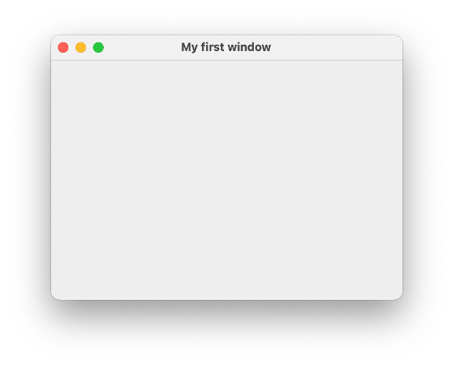

Graphical User Interfaces¶
Bis jetzt haben wir unsere Ein- und Ausgaben über die Konsole erledigt oder wir haben Testklassen geschrieben, um Funktionalitäten unserer Programme zu testen. Nun wollen wir grafische Nutzeroberflächen (Graphical User Interfaces (GUI)) erstellen, also Fenster, die Steuerelemente enthalten. Steuerelemente sind Ein- und Ausgabeelemente, Labels (also Text), Buttons, Checkboxes, Radiobuttons usw.
Das Java Developement Kit (JDK) beinhaltet verschiedene Bibliotheken zum Erstellen grafischer Nutzeroberflächen:
- AWT (abstract window toolkit)
java.awt; alt, aber noch viele Sachen, die man heute noch nutzt: Farben, Listener für Maus und Tastur, Grafiken, ... - Swing
javax.swing; das verwenden wir zum Erstellen von Fenstern, auch nicht mehr ganz neu - JavaFX
javafx; sollte eigentlich Swing ablösen, hat sich aber nicht durchgesetzt, seit Java 11 nicht mehr Bestandteil des Standard-JDK
Swing ist, wie bereits gesagt, auch nicht mehr neu und wird häufig als veraltet bezeichnet. Allerdings gibt es auch keine Alternativen. JavaFX sollte Swing ablösen, hat sich jedoch noch nicht durchgesetzt. Wir verwenden Swing aus zwei Gründen:
- erstens ist es immernoch das am meisten verwendete Framework für die Erstellung von GUIs in nativen Desktopanwendungen (also alles, was nicht "Web" und was nicht "mobile" ist), bspw. wurde IntelliJ mit Swing aufgebaut und
- zweitens geht es uns um die Konzepte, d.h. um den hierarchischen Aufbau der Oberflächen, um Nutzereignisse und die Behandlung dieser. Wir werden uns im 3. Semester in "Webtechnologien" mit der Erstellung moderner Weboberflächen beschäftigen und dabei auf die Grundlagen aufbauen, die wir hier legen. Die Konzepte sind nämlich dieselben.
Elemente einer GUI¶
Eine GUI besteht aus verschiedenen Elementen, deren Zusammenspiel erst die Benutzbarkeit der Oberfläche ermöglichen. Unter Benutzbarkeit ist dabei die einfache, intuitive und übersichtliche Ein- und Ausgabe von Daten gemeint. Im 6. Semester gibt es eine ganze Lehrveranstaltung zum Thema Usability in unserem Studiengang.

Folgende Elemente sind in einer GUI von Bedeutung:
- Das Fenster stellt den äußeren Rahmen einer grafischen Anwendung dar. Es enthält typischerweise einen Rahmen und eine Titelleiste, in der der Name des Fensters bzw. der Anwendung (in der oberen Abbildung
Window) und drei Buttons zum Schließen des Fensters bzw. der Anwendung (das rote Kreuz in der oberen Abbildung), zum Vollbildmodus (das Quadrat) und zum Verkleinern des Fensters in die Taskleiste (der Unterstrich) enthalten sind. Der Rahmen, genau wie die Titelleiste mit den drei Buttons, sind aber optional. Ein Fenster enthält Komponenten. - Komponenten sind alle Oberflächen- bzw. Steuerelemente, d.h. Buttons (siehe oben
< BackundNext >), Labels (Texte, z.B.Checkbox), Checkboxes (die Quadrate, die ein Häkchen haben können oder auch nicht), Ein- und Ausgabefelder, Auswahllisten usw. Steuerlemente sind also alle Elemente, die direkt der Ein- und Ausgabe dienen. Darüber hinaus gibt es noch die Komponente Container. Ein Container kann selbst wieder Container enhalten oder Steuerelemente. Container sind nicht direkt sichtbar, sondern sie dienen der Strukturierung einer grafischen Oberfläche. - Layoutmanager organisieren die Positionierung von Komponenten. Mithilfe von Layoutmanagern kann man Container unter- und/oder nebeneinander positionieren und organisiert somit die Anordnung der Steuerelmente.
- Menüs sind einblendbare Befehlsleisten. Es gibt die Menüs, die meistens oben in der Menüleiste verankert sind und Kontextmenüs, die dort erscheinen, wo man, meistens mit der rechten, Maustaste hinklickt.
- Events (Ereignisse) haben zunächst nichts mit der Darstellung selbst zu tun. Sie sind aber für die Benutzbarkeit sehr wichtig, denn jede Nutzeraktion löst ein Ereignis aus, welches wir im programm behandeln können, z.B. Mausklicks, Mausbewegungen, Tastatureingaben, Bewegen, Vergrößern, Verkleinern des Fensters usw. Wir werden uns sehr ausführlich mit der Behandlung von Ereignissen beschäftigen.
- Zeichenoperationen dienen der Erstellung von Punkten, Linien, Text usw. in Fenstern. Während die Steuerelemente ein festes Aussehen besitzen (anpassbar, je nach Betriebssystem und unterschiedlichen Look&Feel-Frameworks), können mit Zeichenoperationen beliebige Elemente erstellt und dargestellt werden, z.B. Grafiken, Kurven oder Diagramme.
Wir werden auf alle diese Elemente eingehen und starten jetzt aber mit unserem ersten Fenster.
Ein erstes Fenster mit Swing¶
Wir erstellen uns eine Klasse MyFirstWindow. Von dieser Klasse erzeugen wir uns ein Objekt. Dazu implementieren wir den parameterlosen Konstruktor dieser Klasse. In diesem Konstruktor wird ein JFrame erzeugt - das ist das Fenster bei Swing. Wir haben in dieser Klasse auch eine main()-Methode. das ist nicht ganz sauber, da die main()-methode ja eigentlich keine Eigenschaft unserer Klasse ist, deren Responsibility die Erstellung eines Fensters ist, aber wir vereinfachen hier zu Anfang:
1 2 3 4 5 6 7 8 9 10 11 12 13 14 15 16 17 18 19 20 21 | |
Wenn wir diese Klasse ausführen, erscheint folgendes Fenster:

Das Aussehen ist betriebssystemabhängig. Probieren Sie die drei "Knöpfe" in der Titelleiste aus, sie funktionieren bereits, d.h. das Fenster lässt sich in die Taskleiste verkleinern, es lässt sich in den Vollbildmodus umschalten und es kann geschlossen werden (und damit das ganze Programm). Sie können es auch bereits in der Größe verändern.
Wir betrachten das Programm im Detail:
- In Zeile
8wird ein Objekt der KlasseJFrameerzeugt. Diese Klasse muss aus demjavax.swing-Paket importiert werden (Zeile1). Sollte der Import bei Ihnen nicht funktionieren, müssen Sie in Ihremodule-info.javanochrequires java.desktop;einfügen, um dieses Modul zu laden. Die KlasseJFramerepräsentiert ein Fenster im Swing-Paket. Das bedeutet, dass wir, wenn wir in Zukunft eine GUI mithilfe von Swing erstellen, immer damit beginnen, ein Objekt der KlasseJFramezu erzeugen - nämlich ein Fenster. - Die Klasse JFrame stellt eine Unmenge an Objektmethoden zur Verfügung, um das Fenster zu verändern. Viele dieser Methoden sind auch aus Klassen des
java.awt-Pakets geerbt, z.B. von Frame, von Component, von Container oder von Window, aber dazu kommen wir später. Wir wenden einige dieser Methoden bereits an: - In Zeile
9setzen wir mithilfe der ObjektmethodesetTitle()einen Titel für unser Fenster, hier"My first window". Um den Titel zu setzen, gibt es auch einen parametrisierten Konstruktor vonJFrame, dem dieser Titel übergeben werden kann. - In Zeile
10definieren wir, was passieren soll, wenn wir auf denSchließen-Buttons des Fensters klicken (also auf das rote Kreuz oder den roten Kreis in der Titelleiste). Mit der statischen KonstantenEXIT_ON_CLOSEaus der KlasseJFramelegen wir fest, dass sowohl das Fenster geschlossen als auch das Programm beendet werden soll, wenn wir denSchließen-Button anklicken. Diese Option ist auch die einzig empfohlene Option für das Schließen des (Haupt-)Fensters. Leider ist sie nicht Standard, so dass wir das immer mitprogrammieren müssen. Sollten Sie diese Anweisung vergessen, so schließt sich zwar das Fenster, nicht jedoch das Programm. - In Zeile
11legen wir die Größe des Fensters in Pixeln fest. Hier wird die Breite mit400Pixeln und die Höhe mit300Pixeln festgelegt. Die Größe des Fensters ist somit abhängig von der Auflösung Ihres Monitors. Wenn Sie diese Angabe "vergessen", erscheint das Fenster genau so groß, wie es nötig ist, um alle Steuerelemente in dem Fenster darzustellen. Sie würden also nur die drei Knöpfe in der Titelleiste sehen. Diese "minimal erforderliche" Größe eines Fensters erreicht man auch mit der Objektmethodepack(), die das Fenster genau so groß darstellt, dass alle Steuerlemente sichtbar sind. - In Zeile
12legen wir fest, wo das Fenster auf unserem Monitor erscheint. Die linke obere Ecke des Monitors hat die Koordinaten(0,0). Der erste Parameterwert insetLocation()legt fest, wie weit nach rechts der linke obere Punkt des Fensters auf unserem Monitor verschoben wird und der zweite Parameterwert legt fest, wie weit nach unten der linke obere Punkt des Fensters verschoben wird. Hier verschieben wir also das Fenster um300Pixel nach rechts und um200Pixel nach unten. Wenn Sie diese Angabe nicht treffen, erscheint das Fenster in der linken oberen Ecke des Monitors. - In Zeile
13setzen wir das Fenster auf sichtbar. Diese Anweisung sollten wir nicht vegessen, denn ansonsten sieht man das Fenster nicht und Sie wundern sich.
Unsere Klasse ist selbst ein Fenster¶
Ehe wir weitere Methoden für JFrame ausprobieren, ändern wir die Implementierung unserer Klasse leicht. Derzeit haben wir in unserer Klasse ein Fenster erzeugt. Nun soll unsere Klasse selbst (besser gesagt: ein Objekt unserer Klasse) ein Fenster sein. Dazu lassen wir unsere Klasse von JFrame erben:
1 2 3 4 5 6 7 8 9 10 11 12 13 14 15 16 17 18 19 20 21 | |